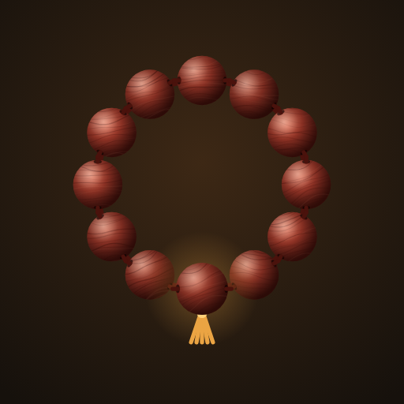
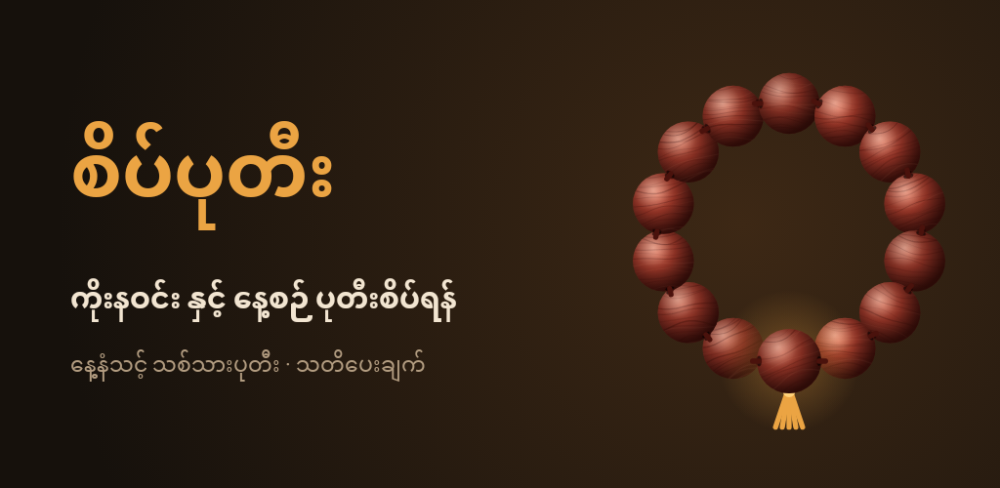

<title>စိပ်ပုတီး Play Upload</title>
<link rel="preconnect" href="https://fonts.googleapis.com">
<link rel="stylesheet" href="https://fonts.googleapis.com/css2?family=Padauk:wght@400;700&family=Fraunces:opsz,wght@9..144,600&family=Source+Sans+3:wght@400;600&display=swap">
<style>
/* Layout: one reading column of numbered Play Console steps, copy-ready text blocks inline */
:root {
  --bg:#f6efe4; --panel:#fffaf2; --fg:#2a1d12; --muted:#7a6550; --line:#e3d4bf; --accent:#a8661c; --soft:#f1e0c4; --ok:#2f7a4c;
  --display:"Fraunces", Georgia, serif; --body:"Source Sans 3","Padauk",system-ui,sans-serif; --mm:"Padauk","Myanmar Text",system-ui,sans-serif;
}
@media (prefers-color-scheme: dark) { :root:not([data-theme="light"]) { --bg:#16110c; --panel:#211912; --fg:#f2e5d1; --muted:#b29c80; --line:#3b2e22; --accent:#eba443; --soft:#4a3317; --ok:#6cc08b; color-scheme:dark } }
:root[data-theme="dark"] { --bg:#16110c; --panel:#211912; --fg:#f2e5d1; --muted:#b29c80; --line:#3b2e22; --accent:#eba443; --soft:#4a3317; --ok:#6cc08b; color-scheme:dark }
body { background:var(--bg); color:var(--fg); font:16px/1.6 var(--body); padding:32px 16px 64px }
main { max-width:760px; margin:0 auto; display:flex; flex-direction:column; gap:40px }
h1 { font:600 2.3rem/1.15 var(--display); margin:0; text-wrap:balance }
h2 { font:600 1.4rem/1.3 var(--display); margin:0 0 12px; display:flex; gap:12px; align-items:baseline }
h2 .n { color:var(--accent); font-variant-numeric:tabular-nums }
p, li { max-width:65ch }
.mm, pre { font-family:var(--mm) }
.hero { display:grid; grid-template-columns:96px 1fr; gap:20px; align-items:center }
.hero img { border-radius:22px; width:96px }
.sub { color:var(--muted); margin:6px 0 0 }
.feature { border-radius:10px; border:1px solid var(--line) }
.shots { display:grid; grid-template-columns:repeat(4,1fr); gap:10px }
.shots img { border-radius:8px; border:1px solid var(--line) }
@media (max-width:520px) { .shots { grid-template-columns:repeat(2,1fr) } .hero { grid-template-columns:64px 1fr } .hero img { width:64px; border-radius:15px } }
.field { background:var(--panel); border:1px solid var(--line); border-radius:10px; margin:12px 0; min-width:0 }
.fh { display:flex; gap:10px; align-items:center; padding:8px 12px; border-bottom:1px solid var(--line) }
.lbl { font-weight:600; flex:1 } .cnt { color:var(--muted); font-size:.85rem; font-variant-numeric:tabular-nums }
pre { margin:0; padding:12px; white-space:pre-wrap; word-break:break-word; font-size:1rem; line-height:1.8 }
pre.tall { max-height:300px; overflow:auto }
button.cp { font:600 .85rem var(--body); background:var(--accent); color:var(--bg); border:0; border-radius:6px; padding:5px 12px; cursor:pointer }
button.cp:focus-visible { outline:2px solid var(--fg); outline-offset:2px }
.tw { overflow-x:auto }
table { border-collapse:collapse; width:100%; font-size:.95rem }
td { border-top:1px solid var(--line); padding:8px 10px 8px 0; vertical-align:top }
td.ans { font-weight:600; color:var(--ok); white-space:nowrap } td.note { color:var(--muted) }
.box { background:var(--soft); border-radius:10px; padding:14px 16px }
.box p { margin:0 }
ol, ul { padding-left:1.3em; margin:0 } li { margin:4px 0 }
code { background:var(--soft); padding:1px 5px; border-radius:4px; font-size:.9em }
a { color:var(--accent) }
</style>
<main>
<header class="hero">
<div><h1>Uploading <span class="mm">စိပ်ပုတီး</span> to Google Play</h1>
<p class="sub">Version 1.0.0 (code 9) · package <code>com.satepadee.app</code> · every text below is ready to paste.</p></div></header>

<section><h2><span class="n">1</span>Check the release build on your phone</h2>
<p>The release build is smaller and optimised, so install <code>satepadee-1.0.0-release.apk</code> on your Redmi Note 7 or Mi Pad 5 first. Count a few beads, open every screen, set a reminder one minute ahead. If anything looks wrong, tell me before uploading.</p></section>

<section><h2><span class="n">2</span>Create the app</h2>
<p>Play Console → <b>Create app</b>:</p>
<ul><li>App name: <b class="mm">စိပ်ပုတီး</b></li><li>Default language: <b>Burmese – my-MM</b></li><li>App or game: <b>App</b> · Free or paid: <b>Free</b></li><li>Tick both declarations, then <b>Create app</b>.</li></ul></section>

<section><h2><span class="n">3</span>Make the privacy policy public</h2>
<p>The policy is already in your Drive folder <span class="mm">စိပ်ပုတီး</span>. Open <a href="https://docs.google.com/document/d/1YkjCvoSHhPRPAr_cUbq9e3uwRX7PIH8a6wM-qlXNLI4/edit">the Google Doc</a>, then <b>File → Share → Publish to web → Publish</b>. Copy the link it gives you (ending in <code>/pub</code>) and paste it into <b>App content → Privacy policy</b>.</p></section>

<section><h2><span class="n">4</span>Store listing</h2>
<p>Grow users → Store presence → <b>Main store listing</b>.</p>
<div class="field"><div class="fh"><span class="lbl">App name</span><span class="cnt">9 / 30</span>
<button type="button" class="cp" data-k="name_my">Copy</button></div>
<pre id="name_my" class="">စိပ်ပုတီး</pre></div>
<div class="field"><div class="fh"><span class="lbl">Short description</span><span class="cnt">74 / 80</span>
<button type="button" class="cp" data-k="short_my">Copy</button></div>
<pre id="short_my" class="">ကိုးနဝင်း နှင့် နေ့စဉ် ပုတီးစိပ်ရန် — တို့ သို့ ပွတ်ဆွဲ ရေတွက်၊ သတိပေးချက်</pre></div>
<div class="field"><div class="fh"><span class="lbl">Full description</span><span class="cnt">1228 / 4000</span>
<button type="button" class="cp" data-k="full_my">Copy</button></div>
<pre id="full_my" class="tall">စိပ်ပုတီး သည် မြန်မာဗုဒ္ဓဘာသာဝင်များအတွက် ရိုးရှင်းသော ပုတီးစိပ် ရေတွက်စက် ဖြစ်ပါသည်။

◆ ကိုးနဝင်း
• ရက် ၈၁ ရက်၊ အဆင့် ၉ ဆင့် ဇယားအတိုင်း ယနေ့ စိပ်ရမည့် ဂုဏ်တော်နှင့် ပတ်ရေကို အလိုအလျောက် ပြပေးပါသည်။
• တနင်္လာနေ့မှ စတင်ပြီး သက်သက်လွတ်နေ့များကို ကြိုတင် သတိပေးပါသည်။
• အဆင့်တိုင်း၏ အစတွင် ဆုတောင်းချက် ရေးထားနိုင်ပြီး အဆင့်ပြီးတိုင်း အကျိုးတရားကို ပြပေးပါသည်။
• ရက်ကျော်သွားပါက သတိပေးပြီး ဆက်လုပ်မည် သို့မဟုတ် ပြန်စမည်ကို ရွေးနိုင်ပါသည်။
• ဂုဏ်တော် ၉ ပါး၏ အဓိပ္ပာယ်နှင့် စည်းကမ်းများကို app ထဲတွင် ဖတ်နိုင်ပါသည်။

◆ ကိုယ်ပိုင် ပုတီး
• မေတ္တာပို့၊ ဘုရားဂုဏ်တော် စသည်ဖြင့် ကိုယ်တိုင် ထည့်နိုင်၊ ပြင်နိုင်ပါသည်။
• တစ်ပတ်လျှင် လုံးရေ၊ နေ့စဉ် ပတ်ရေ နှင့် သတိပေးချိန်ကို သတ်မှတ်နိုင်ပါသည်။
• စိပ်ပုတီး (အလွတ်) ဖြင့် လွတ်လပ်စွာ ရေတွက်နိုင်ပါသည်။

◆ ပုတီးစိပ်ရသည့် ခံစားချက်
• မျက်နှာပြင်ကို တို့၍ သို့မဟုတ် ပွတ်ဆွဲ၍ ရေတွက်နိုင်ပါသည်။ ပွတ်ဆွဲတစ်ကြိမ်လျှင် ပုတီးတစ်လုံးသာ ရေတွက်ပါသည်။
• ပုတီးလုံးများ လက်ထဲတွင် လှိမ့်သွားသကဲ့သို့ မြင်ရပြီး တစ်လုံးချင်း တုန်ခါမှုဖြင့် သိနိုင်ပါသည်။
• နေ့နံအလိုက် သင့်တော်သော သစ်သားပုတီး (ပိတောက်၊ ကံ့ကော်၊ သီး၊ ထိန် စသည်) ကို ရွေးနိုင်ပါသည်။

◆ ရိုးရှင်းပြီး လုံခြုံသည်
• မြန်မာဘာသာ သီးသန့်။
• အင်တာနက် မလို၊ အကောင့် မလို၊ ကြော်ငြာ မပါ။
• အချက်အလက်အားလုံးကို သင့်ဖုန်းထဲတွင်သာ သိမ်းပါသည်။

သာဓု သာဓု သာဓု။</pre></div>
<p>Optional: add an English (en-US) translation with these:</p>
<div class="field"><div class="fh"><span class="lbl">App name (English)</span><span class="cnt">26 / 30</span>
<button type="button" class="cp" data-k="name_en">Copy</button></div>
<pre id="name_en" class="">Sate Pa Dee - Prayer Beads</pre></div>
<div class="field"><div class="fh"><span class="lbl">Short description (English)</span><span class="cnt">75 / 80</span>
<button type="button" class="cp" data-k="short_en">Copy</button></div>
<pre id="short_en" class="">Prayer bead counter for Myanmar Buddhists, with the Kozawin 81-day practice</pre></div>
<div class="field"><div class="fh"><span class="lbl">Full description (English)</span><span class="cnt">843 / 4000</span>
<button type="button" class="cp" data-k="full_en">Copy</button></div>
<pre id="full_en" class="tall">Sate Pa Dee (စိပ်ပုတီး) is a simple prayer-bead counter for Myanmar Buddhists. The app is in Myanmar language.

Kozawin (ကိုးနဝင်း)
• Follows the 81-day, 9-stage chart and shows today&#x27;s virtue and number of rounds.
• Starts on a Monday and reminds you of vegetarian days.
• Write a wish at the start of each stage and read its benefit when the stage is done.
• Warns about missed days and lets you choose how to continue.

Your own recitations
• Add and edit your own recitations with beads per round, daily rounds and a reminder time.
• A free counter for any recitation.

Counting
• Count by tapping or swiping. One swipe counts exactly one bead.
• Close-up rolling wooden beads with a vibration for each bead.
• Choose a wood that suits your birth day.

Private and offline
• No internet, no account, no ads. Everything stays on your phone.</pre></div>
<h3>Graphics</h3>
<ul><li>App icon: <code>icon-512.png</code> (512×512)</li><li>Feature graphic: <code>feature-graphic-1024x500.png</code></li><li>Phone screenshots: all 7 <code>phone-*.png</code> (1080×2160)</li><li>10-inch tablet screenshots: the 2 <code>tablet-*.png</code></li></ul>

<div class="shots"></div>
<p>Store settings: category <b>Lifestyle</b>, contact email <b>kyawzaya00@gmail.com</b>.</p></section>

<section><h2><span class="n">5</span>App content (Policy → App content)</h2>
<div class="tw"><table>
<tr><td>Privacy policy</td><td class="ans">Your /pub link</td><td class="note">From step 3</td></tr>
<tr><td>Ads</td><td class="ans">No</td><td class="note"></td></tr>
<tr><td>App access</td><td class="ans">All functionality available</td><td class="note">No login</td></tr>
<tr><td>Content rating</td><td class="ans">Category: Reference, News, or Educational</td><td class="note">Answer No to every question; email kyawzaya00@gmail.com</td></tr>
<tr><td>Target audience</td><td class="ans">13–15, 16–17, 18+</td><td class="note">Leave under-13 unticked to stay out of the Families programme</td></tr>
<tr><td>Data safety</td><td class="ans">Collects or shares data? No</td><td class="note">Everything stays on the phone</td></tr>
<tr><td>Government app</td><td class="ans">No</td><td class="note"></td></tr>
<tr><td>Financial features</td><td class="ans">None</td><td class="note"></td></tr>
<tr><td>Health</td><td class="ans">None</td><td class="note"></td></tr>
<tr><td>News app</td><td class="ans">No</td><td class="note"></td></tr>
<tr><td>Advertising ID</td><td class="ans">No</td><td class="note"></td></tr>
</table></div></section>

<section><h2><span class="n">6</span>Closed test (required before production)</h2>
<div class="box"><p>New personal developer accounts must run a closed test with <b>at least 12 testers for 14 days in a row</b> before Production is unlocked.</p></div>
<ol>
<li>Test and release → Testing → <b>Closed testing</b> → Create track (or use “Alpha”).</li>
<li>Testers: create an email list with 12 or more Gmail addresses (family, friends, monastery members).</li>
<li>Countries: Myanmar plus where your testers live.</li>
<li>Create release → upload <code>satepadee-1.0.0.aab</code>. Accept <b>Play App Signing</b> when asked.</li>
<li>Release notes (my-MM):</li></ol>
<div class="field"><div class="fh"><span class="lbl">Release notes</span><span class="cnt">150 / 500</span>
<button type="button" class="cp" data-k="notes_my">Copy</button></div>
<pre id="notes_my" class="">စိပ်ပုတီး ပထမဆုံး ဗားရှင်း — ကိုးနဝင်း ရက် ၈၁ ရက် ဇယား၊ ကိုယ်ပိုင် ပုတီးများ၊ တို့/ပွတ်ဆွဲ ရေတွက်ခြင်း၊ နေ့နံသင့် သစ်သားပုတီး နှင့် နေ့စဉ် သတိပေးချက်။</pre></div>
<ol start="6"><li>Review and roll out. Send testers the <b>opt-in link</b>; each one must join and keep the app installed.</li>
<li>After 14 days: Dashboard → <b>Apply for production</b>, answer the short questionnaire, then promote the same release.</li></ol></section>

<section><h2><span class="n">7</span>Keep the upload key safe</h2>
<p><code>satepadee-upload.jks</code> and <code>keystore.properties</code> (which holds its password) sign every future update. Keep copies in two safe places, for example your own Google Drive and a USB stick. Don't share them. If they are lost, Play Console support can reset the upload key because Google holds the app signing key.</p>
<p class="sub">Upload certificate SHA-256: <code style="word-break:break-all">9A:A6:56:23:73:6C:E3:39:BB:EE:10:77:CD:1D:D1:77:16:FE:ED:13:82:D1:23:94:24:34:62:C7:42:A0:43:1D</code></p></section>
</main>
<script>
document.querySelectorAll("button.cp").forEach(b => b.addEventListener("click", () => {
  const el = document.getElementById(b.dataset.k), done = () => { b.textContent = "Copied"; setTimeout(() => b.textContent = "Copy", 1500) };
  const select = () => { const r = document.createRange(); r.selectNodeContents(el); const s = getSelection(); s.removeAllRanges(); s.addRange(r); b.textContent = "Selected, press copy" };
  try { navigator.clipboard.writeText(el.textContent).then(done, select) } catch (e) { select() }
}));
</script>
